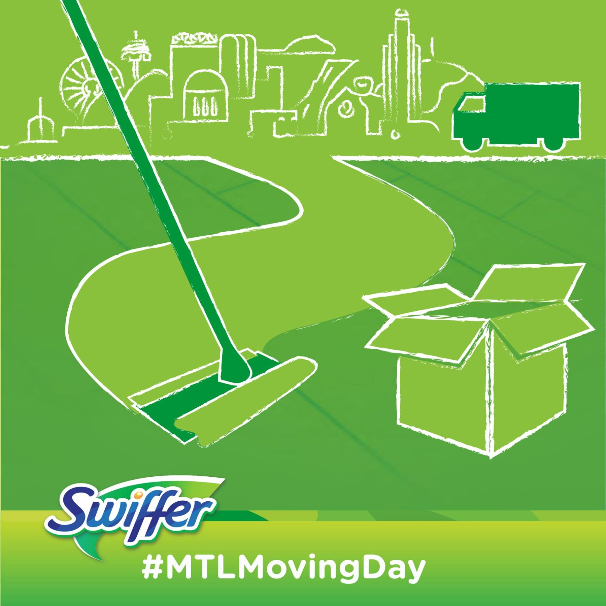
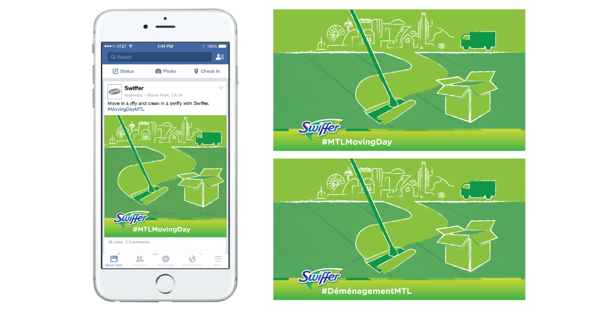

Swiffer Marketing Visuals
Swiffer worked with Loogart and Citizen Relations to develop social media creatives utilizing the Montreal CityLine design for their 2016 Canada Moving Day campaign in Montreal.
Scroll
Branding and texture
The key components which made the existing Montreal CityLine fit within the Swiffer visual ecosystem were a proper use of their branding color palette. We also opted to give the design a hand-drawn dusty look to express the "out with the old, in with the new" which aligns with Swiffer's commitment to clean.
The creative was used on social media prior to Moving Day in Montreal.
On the street
The design was transposed onto trucks on Moving Day 2016 and Swiffer went around Montreal giving out some of their products and promotional items.